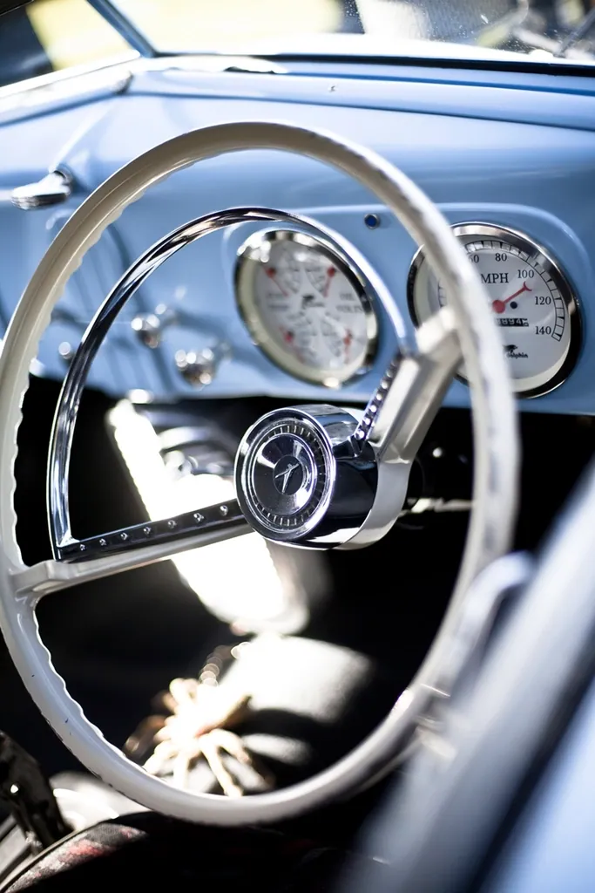

About Whitewall Weekend
Whitewall Weekend is an independent magazine for everyone who loves a classic car. It was born from a simple conviction: that the joy of these beautiful old machines — the history, the style, the easy camaraderie of a car show — belongs to everyone, not just those with a show-winning garage or a mechanic's know-how.

What we cover
We celebrate the whole hobby, gently and in plain language. We trace the history of the cars decade by decade, we help newcomers enjoy their first car show and veterans plan a restoration wisely, we share the simple care that keeps a classic healthy, and we have a bit of fun with trivia along the way. Our aim is to be the friendliest seat at the cruise-in — knowledgeable, welcoming, and never snobbish.
How we write
Our historical facts are checked against reliable references, and we are careful with dates and details. Our maintenance notes stay general and always put safety first; for real repairs we send you to a qualified mechanic every time. Drafts may be prepared with AI assistance and are reviewed and edited by our editorial team before publishing, and every page carries a "Last reviewed" date.
What we do not do
Whitewall Weekend is an independent classic-car enthusiast magazine. It is free from top to bottom, sells nothing, and offers no services or appraisals. When we name a make or model, it is only to describe and celebrate it. Whitewall Weekend is an independent educational website and is not affiliated with, endorsed by, or sponsored by any manufacturer or brand mentioned. We do not cover illegal modifications or anything that defeats a car's emissions or safety equipment; our love is for preserving and enjoying these cars, properly and within the law.
The spirit of the thing
If Whitewall Weekend has a creed, it is this: these cars are to be enjoyed and shared, not hoarded or lorded over. We have no time for snobbery, no interest in telling you your car is the wrong kind, and no patience for the notion that the hobby belongs only to the wealthy or the expert. A rust-dusted driver loved by its owner is as welcome in these pages as any trophy winner. The joy is the point, and the joy is for everyone.
About the photographs
The photographs here are openly licensed images from public collections, downloaded and kept on our own pages rather than borrowed from across the web. Where a license asks for credit, we name the photographer beneath the picture, and a full list lives in the site's image credits file.
Pull up and say hello
We love to hear from fellow enthusiasts — a car you adore, a show you enjoyed, a memory a photograph stirred, a topic you would like us to cover, or a correction we ought to make. Reader notes genuinely shape what we write next, and a story about a car your family once owned is always a joy to receive. Write any time to garage@whitewallweekend.com, and see our Contact page for what to expect.